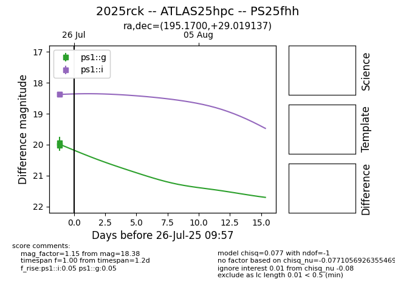

Target 2025rck at 2025-07-26 09:57, see:
TNS: wis-tns.org/object/2025rck
YSE: ziggy.ucolick.org/yse/transient_detail/2025rck
alt names
2025rck (yse,tns)
ATLAS25hpc (atlas)
PS25fhh (panstarrs)
coordinates:
equatorial (ra, dec) = (195.1700,+29.01914)
galactic (l, b) = (76.3162,+87.21954)
photometry
last ps1::g=20.02, ps1::i=18.38
2 ps1::g, 2 ps1::i detections
